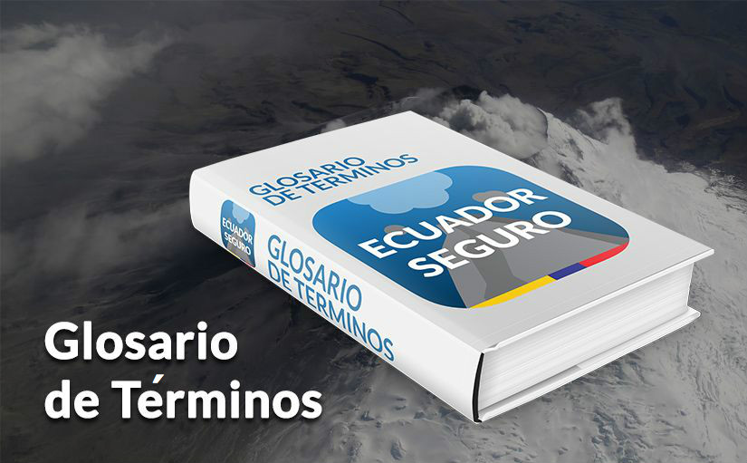

Sismos: La mayorÍa de volcanes casi siempre presenta actividad sÍsmica, aún cuando se encuentre en periodo de calma. Esta actividad suele estar representada por la ocurrencia de unos pocos sismos diarios, detectados mediante una red de sismógrafos.
Sismos: La mayorÍa de volcanes casi siempre presenta actividad sÍsmica, aún cuando se encuentre en periodo de calma. Esta actividad suele estar representada por la ocurrencia de unos pocos sismos diarios, detectados mediante una red de sismógrafos.|  |
Glosario de Términos. Fuente: "Manual del Comité de Gestión de Riesgos", Secretaría de Gestión de Riesgos.
Sismos: La mayorÍa de volcanes casi siempre presenta actividad sÍsmica, aún cuando se encuentre en periodo de calma. Esta actividad suele estar representada por la ocurrencia de unos pocos sismos diarios, detectados mediante una red de sismógrafos.
Accidente: Suceso fortuito que puede producir perjuicios o daños personales, alterar el curso regular de los acontecimientos, o danñar los bienes o el entorno.
Afectado: Persona que recibe los impactos de un evento adverso en los servicios básicos comunitarios o en sus medios de subsistencia, y que -a pesar de ello- puede continuar, en lo principal, con su actividad normal. Ocasionalmente, los afectados pueden requerir de ayuda humanitaria o asistencia social.
Albergado: Persona que por decisión de autoridad competente recibe temporalmente atención en el sistema de albergues permanentes o temporales que maneja el Estado, familias acogientes u otros medios destinados a acoger a personas afectadas por eventos adversos en curso o inminentes.
Albergue temporal: Infraestructura, generalmente de orden público, utilizada por decisión de la autoridad competente para recibir a las personas evacuadas por cortos periodos de tiempo.
Alerta de tsunami: Declaración oficial que hace la Secretaría General de Riesgos (SGR) para comunicar el estado de una amenaza. Los estados de alerta son: alerta, advertencia, observación, información y cancelación.
Amenaza: Fenómeno, sustancia, actividad humana o condición peligrosa que puede ocasionar la muerte, lesiones u otros impactos a la salud, así como daños materiales, sociales, económicos o ambientales.
Asistencia humanitaria: Acciones institucionales que se ejecutan según las normas establecidas por el ente rector, orientadas a proteger la vida y las condiciones básicas de subsistencia de las personas que han sufrido los impactos de eventos adversos. La asistencia humanitaria operará mientras duren los efectos directos del evento adverso sobre las personas. Será equitativa y guardará neutralidad e imparcialidad.
Cancelación de alerta de tsunami: Una alerta de tsunami será cancelada cuando no haya olas dañinas que se acerquen a la costa. Una cancelación se emite cuando las lecturas del nivel del mar indican que un tsunami está por debajo de los niveles de destrucción y disminuye en la mayoría de las áreas vigiladas.
Capacidad: La combinación de fortalezas, atributos y recursos disponibles dentro de una sociedad, comunidad u organización, que pueden contribuir a la resiliencia de un territorio o sistema.
Catástrofe: Evento adverso que implica destrucción o danño masivo en un sistema determinado. Su declaración corresponde a la SGR.
Comité de Operaciones de Emergencia, COE: Comité de Gestión de Riesgos activado para atender las emergencias.
Competencias concurrentes : Son aquellas cuya titularidad corresponde a varios niveles de gobierno en razón del sector o materia, por lo tanto deben gestionarse obligatoriamente de manera concurrente (COOTAD, Art 115).
Damnificado: Persona que sufre los impactos directos de un evento adverso en los servicios básicos, comunitarios o en sus medios de subsistencia, y que no puede continuar, en lo principal, con su actividad normal. Todos los damnificados pueden ser objeto de ayuda humanitaria o asistencia social.
DART: Sistema de Información y Evaluación de Tsunamis en el Fondo Marino (DART, por sus siglas en inglés). Sistema para la medición, la detección temprana y el reporte en tiempo real de tsunamis en el océano profundo. El sistema DART fue desarrollado por el Laboratorio Ambiental Marino del Pacífico de la NOAA de los Estados Unidos de América.
Desastre: Perturbación en el funcionamiento de un sistema, declarada como tal por la SGR. Su manejo es, por mandato constitucional, de competencia exclusiva del Estado central con la acción concurrente de las demás entidades públicas y privadas. El desastre es una de las causales para la eventual declaración de un estado de excepción.
Emergencia: Evento adverso cuya ocurrencia o inminencia tiene potencial para afectar el funcionamiento de una entidad, territorio o sistema, con daño para las personas, las colectividades, la naturaleza, los bienes o los servicios. Se maneja con las capacidades de la propia entidad, territorio o sistema y de acuerdo con el principio de descentralización subsidiaria.
Evento adverso: Perturbación que causa perjuicios de diverso tipo y magnitud. Incluye cuatro tipos: los incidentes, las emergencias, los desastres y las catástrofes. Su origen puede ser tanto natural como socio natural o antrópico.
Fin de alerta de tsunami: Una vez que una alerta de tsunami se cancela, las autoridades emiten una notificación de fin de alerta de tsunami a la población en el momento en que es seguro regresar a las zonas evacuadas.
Gestión del riesgo: Conjunto sistemático de disposiciones, recursos, medidas y acciones que deben basarse en el mejor conocimiento disponible, con el propósito de reducir la vulnerabilidad. La gestión de riesgos incluye: la prevención, mitigación, respuesta, recuperación y reconstrucción.
Grado de exposición: Medida en que la población, las propiedades, los sistemas o sus elementos pueden ser alcanzados por una o más amenazas.
Incidente: Tipo de perturbación puntual y de impacto limitado, que no altera gravemente el funcionamiento de un sistema o comunidad. Los incidentes son atendidos por entidades y servicios especializados de respuesta y socorro.
Instalaciones vitales: Las estructuras físicas, instalaciones técnicas y sistemas que son social, económica u operativamente esenciales para el funcionamiento de una sociedad o comunidad en un territorio, tanto en circunstancias habituales como durante una emergencia.
Instituciones científico - técnicas: Entidades especializadas que tienen mandato para estudiar las amenazas, como: INOCAR: Instituto Oceanográfico de la Armada. IG-EPN: Instituto Geofísico de la Escuela Politécnica Nacional. INAMHI: Instituto Nacional de Meteorología e Hidrología. INIGEMM: Instituto Nacional de Investigación Geológica, Minera y Metalúrgica.
Líneas vitales: Redes que soportan los servicios de agua, alcantarillado, energía eléctrica, comunicaciones, gas natural, combustibles líquidos, sistemas de transporte y otros. Son vitales porque la sociedad depende de la calidad y continuidad de los servicios que prestan durante su operación normal y en situaciones de recuperación y respuesta ante emergencias.
Medidas estructurales de Gestión de Riesgos: Medios de ingeniería y de construcción para reducir o evitar el impacto de amenazas sobre las personas, las poblaciones, y los bienes y servicios de los territorios.
Medidor de ola georreferenciado: Boya en la superficie del mar con una antena georreferenciada amarrada a unos 20 km de la costa para monitorear los cambios del nivel del mar usando la técnica GPS de la navegación cinética satelital en tiempo real (RTK, por sus siglas en inglés) con una estación en tierra. La boya georreferenciada se usa como medidor de ola para detectar tsunamis antes de que éstos impacten en la costa.
Medidas no estructurales de Gestión de Riesgos: Políticas, compromisos, planes, mecanismos participativos, desarrollo del conocimiento, métodos y prácticas que puedan fortalecer la resiliencia.
Mitigación: Actividades y medios empleados para reducir o limitar los efectos negativos de los eventos adversos.
MTT (Mesas Técnicas de Trabajo): Mecanismo que integra y coordina las capacidades técnicas de los sectores público y privado para la reducción de riesgos y la atención de las emergencias en un territorio. Las mesas operan en los niveles cantonal, provincial y nacional con enfoque en temas específicos.
Preparación para la respuesta: Desarrollo de capacidades que hacen los gobiernos, organizaciones de respuesta y recuperación, comunidades y personas, para prever y responder ante los eventos adversos.
Prevención: Conjunto de acciones cuyo objeto es evitar que sucesos naturales o generados por la actividad humana, causen eventos adversos.
Punto de encuentro: Lugar definido previamente al que acuden las personas que se encuentran en una zona de riesgo para proteger su vida y salud.
Reconstrucción: Restablecimiento de las infraestructuras y servicios dañados por un desastre, evitando que se repitan en el mediano y largo plazo las condiciones de vulnerabilidad, o que se construyan nuevos factores de riesgo. La reconstrucción puede incluir reasentamientos y cambios de ubicación para las estructuras y poblaciones.
Recuperación: Decisiones y acciones para restaurar el funcionamiento y las condiciones de vida de una comunidad o de un territorio luego de una emergencia, desastre o catástrofe. La recuperación temprana incluye la rehabilitación en el corto plazo de los servicios básicos y de las condiciones normales vida.
Reducción del riesgo de desastres: Disminución de la vulnerabilidad en una escala suficiente para prevenir la ocurrencia de eventos adversos o de impactos con capacidad para dañar el funcionamiento de un determinado sistema; asimismo, estrategias y acciones orientadas a manejar eficazmente los incidentes y las emergencias, evitando que dichos eventos adversos escalen hacia desastres.
Resiliencia: Capacidad de un sistema, comunidad o sociedad para resistir, absorber, adaptarse y recuperarse de los efectos de un evento adverso de manera oportuna y eficaz, lo que incluye la protección y la restauración de sus estructuras y funciones básicas.
Respuesta: Conjunto de acciones ante un evento adverso para minimizar la pérdida de vidas humanas, atender a los afectados y damnificados, velar por la seguridad pública y satisfacer las necesidades básicas de subsistencia de la población afectada.
Retroceso del mar: Retroceso del nivel del mar antes de que se produzca una inundación por tsunami. La línea de agua de la costa retrocede, a veces un kilómetro o más, quedando expuesto el fondo marino, las rocas y los peces. El retroceso del mar es una señal de la naturaleza que advierte de la llegada de un tsunami.
Riesgo: Es la magnitud estimada de pérdidas posibles calculadas para un determinado escenario, incluyendo los efectos sobre las personas, las actividades institucionales, económicas, sociales, y el ambiente. Los factores de riesgo pueden ser de origen natural o antrópico.
Sala Situacional: Red interconectada de oficinas y recursos que cubre el país para reunir, analizar e integrar la información que soporta la toma de decisiones en el Sistema Nacional Descentralizado de Gestión de Riesgos, tanto en época de normalidad como de crisis.
Servicio Integrado de seguridad, SIS ECU-911: Es la plataforma tecnológica que en base a políticas, normas y procesos articula el servicio de atención de llamadas y despacho de recursos de las instituciones públicas, para dar respuesta a las peticiones de la ciudadanía de forma eficaz y eficiente.
Servicios básicos: Son las infraestructuras y capacidades que permiten atender los derechos y necesidades de la población en relación con agua potable, alcantarillado, aguas servidas, drenaje de aguas pluviales, vías, alumbrado público, distribución de energía eléctrica, recolección de residuos sólidos, distribución de gas, seguridad pública, asistencia médica, educación, comunicación.
Servicios esenciales para el manejo de desastres o catástrofes: Corresponden a aquellos que deben protegerse o recuperarse con prioridad, por ser claves para que el Estado central maneje los desastres o catástrofes. Incluye los siguientes servicios: gestión de riesgos, seguridad interna y externa, atención de la salud, servicio de registro civil, identificación y cedulación, telecomunicaciones, y los que presta el ministerio de finanzas.
Simulación: Escenificación del manejo de un hipotético evento adverso por parte de los tomadores de decisión. Es un ejercicio que se realiza en un solo ambiente, que puede ser un salón, una vivienda, una oficina, donde los tomadores de decisiones ponen a prueba los mecanismos y los flujos estipulados en un plan previamente establecido.
Simulacro: Ejercicio de manejo de un evento adverso siguiendo un guión predefinido, para evaluar las estrategias, procedimientos, des- empeños, tiempos y resultados previstos. Trabaja con hechos y condiciones normales, con personajes y escenarios reales, en tiempo fijo.
Sismos: Temblores o terremotos que se presentan con movimientos vibratorios, rápidos y violentos de la superficie terrestre, provocados por perturbaciones en el interior de la Tierra (choque de placas tectónicas).
Sistema de alerta temprana: Conjunto de procedimientos e instrumentos cuya finalidad es monitorear una amenaza que pudiera generar un evento adverso.
Sistema de Comando de Incidentes, SCI: Sistema de trabajo interinstitucional, basado en protocolos y procedimientos, mediante el cual las entidades de socorro y apoyo definen sus roles, y ejecutan y documentan las acciones que demandan el manejo de los eventos, incidentes y operativos.
Tsunami: Tsunami (tsu: puerto o bahía; nami: ola) es el término japonés que se atribuye una serie de olas generadas en el océano que se desplazan a gran velocidad en todas las direcciones desde su punto de origen, a partir de un terremoto, erupciones volcánicas o deslizamientos submarinos), el cual impulsa y desplaza verticalmente la columna de agua.
Tsunami local: Tsunami proveniente de una fuente cercana cuyos efectos destructivos afectan a costas situadas a menos de una hora de viaje de la ola del tsunami o, generalmente, en un radio de 200 km desde el origen.
Tsunami de campo lejano: Tsunami originado por una fuente distante, generalmente a más de 1.000 kilómetros o a más de 3 horas de tiempo de viaje de las ondas de tsunami desde su origen.
Vulnerabilidad: Corresponde a las condiciones, factores y procesos que aumentan la exposición o susceptibilidad de una comunidad o sistema al impacto de las amenazas, y a los factores que dañan su resiliencia.
Zona Segura: Zona identificada y adecuadamente señalizada, con baja exposición y susceptibilidad ante una amenaza determinada.